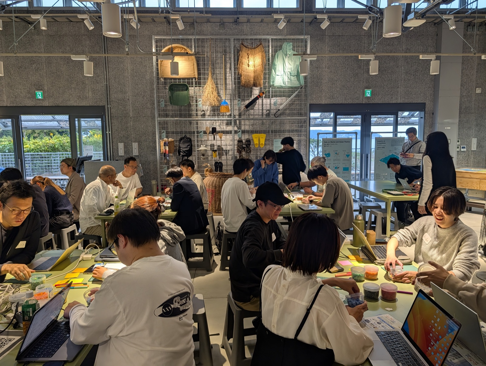
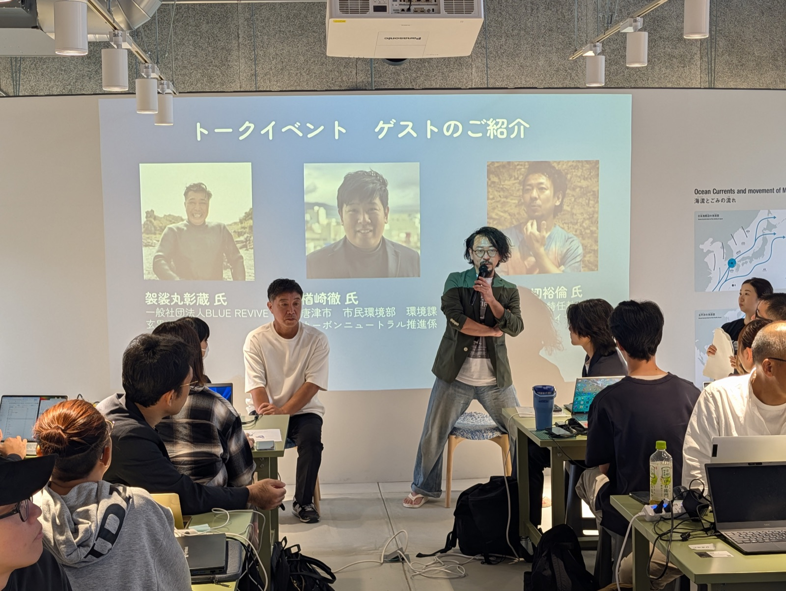
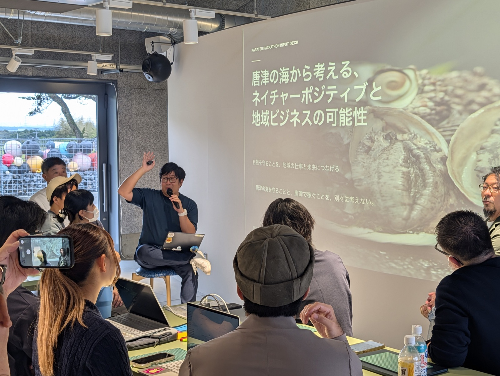
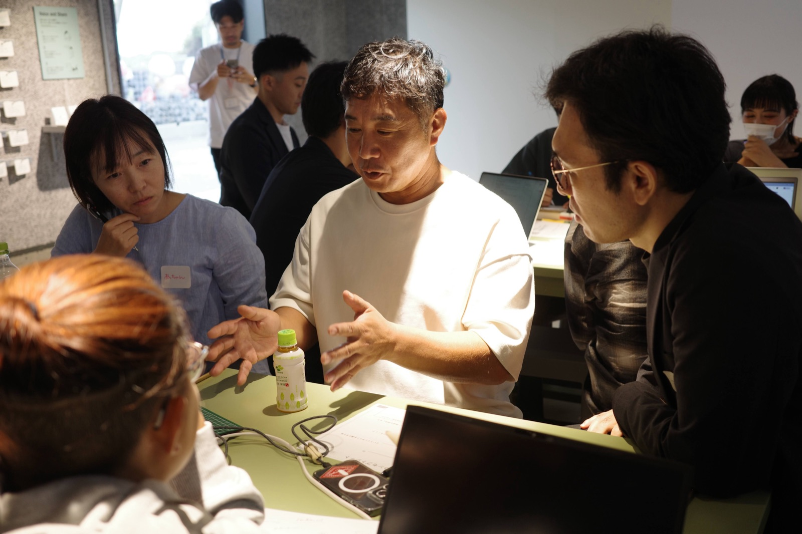
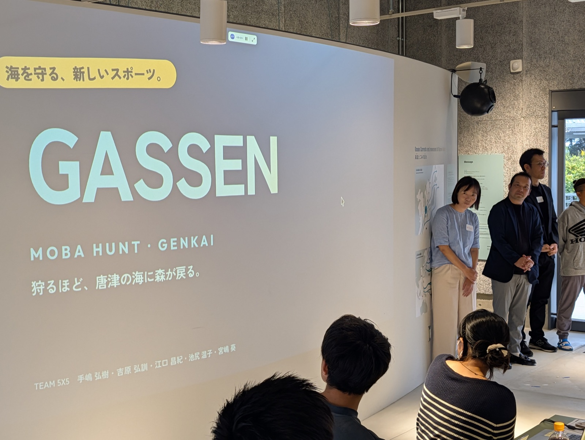
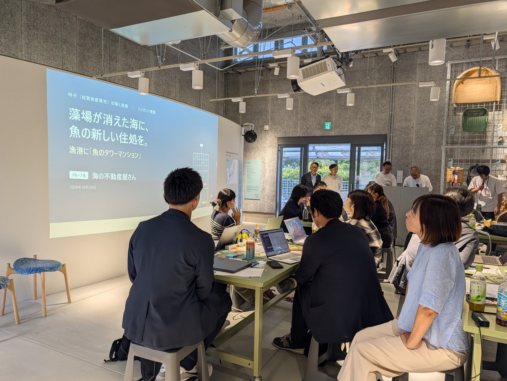
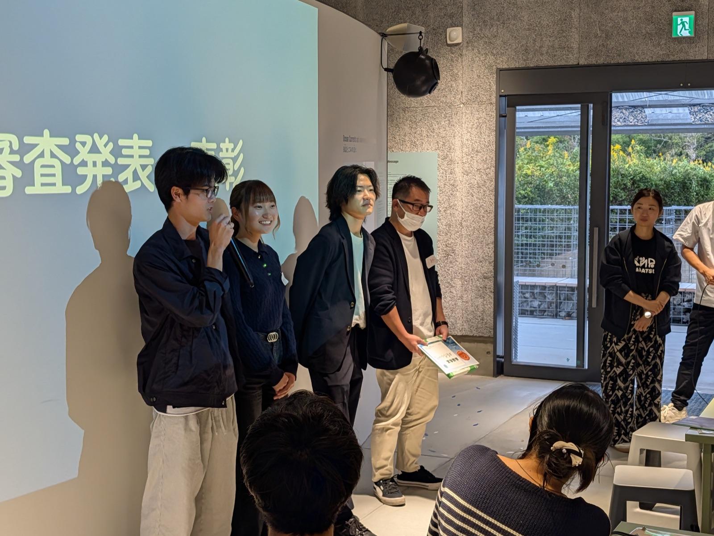

作業の前に、漁師・市役所・研究者から唐津の海の課題をインプット
最初の30分は、漁師の袈裟丸彰蔵さん、唐津市の楢﨑徹さん、東北大学の小田切裕倫さんによる地域課題のインプット。3人はその後も会場に残り、各チームは作業中に何度でも話を聞きに行けました。
2時間で、6チームがビジネスモデルとプロトタイプを発表
藻場の減少、漁業者の高齢化、守っても稼げない構造など、同じ課題から出発して、スポーツイベント、供養の新サービス、企業向けのレポート作成支援、補助金の検索支援、海洋保護の企業研修プログラム、漁港の再利用と、6つの違う答えが出ました。
優秀賞は、補助金を探す手間を減らし、成功報酬の一部を漁協に還元する仕組みが受賞
佐賀大学の学生2人と社会人3人のチーム「佐賀大学とおじさんたち」。漁師の袈裟丸さんへのヒアリングから、「補助金の事務の煩雑さ」という課題に取り組みました。
イベント後アンケートでは、多くの参加者が「地域課題を事業の可能性として捉えられるようになった」と回答
終了後のアンケート（回答者22名）では、全体満足度が平均4.23点（5点満点）。「地域課題を事業の可能性として捉えられるようになった」という設問では平均4.55点で、5段階の4以上を全員がつけました。

会場は唐津市鎮西町波戸の PLAPLA です。
| 時刻 | 内容 |
|---|---|
| 11:00 | Claude をまだ使ったことがない人向けの事前サポート |
| 12:10 | 開幕・オープニング |
| 12:40 | 地域課題インプット。漁師・市役所・研究者の3人が唐津の海の現状を話し、質疑 |
| 13:10 | ハッカソン。チームでビジネスモデルと動くプロトタイプを作る（〜15:10） |
| 15:10 | プロトタイプのピッチ。1チーム3分＋審査員との質疑 |
| 16:10 | 表彰・総評 |
| 16:20 | KDIC（唐津市DXイノベーションセンター）と SANDlab の案内 |
| 16:30 | 集合写真・アンケート・交流 |
| 17:00 | 終了 |

袈裟丸さんは高校を出てから漁業一筋で、去年、海の課題に取り組む一般社団法人BLUE REVIVE を立ち上げました。唐津の海で磯焼け（海藻が消えて、海の中が砂漠のようになる状態）が進み始めたのは2000年ごろ。温暖化が話題になる前から、海藻を食べるウニを、素潜りで1個ずつ手で間引いてきました。
海藻が減ると、魚も、アワビやサザエも減ってしまいます。藻場は魚の産卵場所であり、食物連鎖の場であり、CO2 を吸収する場でもあります。袈裟丸さんが挙げた課題は3つでした。
唐津市でカーボンニュートラルを担当する楢﨑さんは、市のデータを示しました。唐津の漁業者は平成25年から令和5年度までに約37%減り、65歳以上が半数近くを占めます。そして、藻場は52%減りました。
「森で暮らす生き物にとって、森が半分以上なくなっているような状態。人間に置き換えると、町が半分以上なくなっているイメージです」
有名な呼子のイカは藻場で卵を産み、育ちます。そのイカを食べたい人はたくさんいるのに、イカが育つ藻場を守る手間には、誰もお金を払っていない。楢﨑さんはこれを「環境保全と経済性がつながっていない」と表現しました。

楢﨑さんは「AI を使うこと自体が目的にならないように」と、参加者に5つのポイントを伝えました。
- 誰のどんな困りごとを解決するのか
- それが誰の価値になり、誰がお金を払うのか
- 地域の自然や文化を損なわずに、価値を生めるか
- 小さく試して、効率よく続けられる仕組みにできるか
- 海を守ることが誰かの仕事や収益につながるとしたら、どんな仕組みか
トークセッションでは、海は誰のものか、という論点も出ました。農地には持ち主がいて、持ち主が手入れをします。海は「誰のものでもないけれど、誰かのものでもある」。この矛盾が、保全の手が進まない理由の一つだといいます。
聞き手を務めた小田切さんは、ブルーカーボンの仕組みを補足しました。海藻を増やす活動そのものにはお金が入りません。それを CO2 の吸収量として測り、CO2 を出す企業に買ってもらう制度がブルーカーボンです。海藻を売る、魚を増やす、とは別の軸で価値をつけるやり方を、小田切さんは「迂回」と呼び、この日の作業でも必要になると話しました。
質疑では参加者から「環境が変わったのなら、獲る魚を変えればよいのでは」という質問が出ました。楢﨑さんの答えは、獲れる魚が入れ替わったのではなく、そもそも獲れる量が減っているというもの。漁法を変えるには設備投資が要り、獲れても売れるかまで考えなければなりません。昔の唐津の海を知る漁師の思いもあり、合理的な理屈だけでは動かないことも共有されました。

インプットのあとは、6チームに分かれ、2時間でビジネスモデルと動くプロトタイプを作りながら、3分のピッチの用意を進めました。各チームは、作業の前半で漁師の袈裟丸さんや唐津市の楢﨑さんをテーブルに呼び、ヒアリングを行いました。
15時10分から、1チーム3分のピッチと審査員との質疑を行いました。ここからは発表順に、6チームのプランを紹介します。

出発点は「海を守りたい、でも続けられない」。駆除しても給料にならず、人手も足りない。そこで、藻場を食べるガンガゼ（ウニの一種）を狩るほど海に藻場が戻る、というスポーツイベントの形で整理をしました。時期はガンガゼの産卵期より前の5月の連休、場所は波戸岬。ダイビング経験者向けの上級から、親子でゴミを拾う初級までレベルを分けて収益化します。
メンバーの「妻から、死んだら海に骨をまいてほしいと言われている」という話から始まった企画です。漁師が普段の漁のついでに散骨し、故人の名前をつけた海藻を藻場に植える。毎年、海藻と海の様子のレポートが家族に届きます。葬儀社と組み、売上の一部を漁師と保全団体に回す計画で、審査員とのあいだでは、どこまでなら法的に問題ないかなどの議論がありました。
保護活動を支援したい企業はいるのに「成果が見えにくい」。そこで、漁師が作業後にスマホに話すと、Claude が場所・人数・作業量・海の変化を抜き出して、日本語と英語の成果レポートにまとめる仕組みを作りました。
袈裟丸さんへのヒアリングで出てきたのは、漁の事務の重さでした。締切の確認や書類づくりは、疲れた夜には後回しになる。自分が対象になるかも判断できない。チームは、3つの質問にボタンで答えるだけで、自分にあった補助金が見つかるツールを作りました。収益は、補助金が採択されたときの成功報酬10%。そのうち2%を漁協に還元し、後継者の教育や清掃に使ってもらうのが、ふつうの補助金コンサルとの違いです。
森林保護のクレジットに比べて、海の保全はコストが高く、何を守ったかも見えにくい。そこで保護活動を企業の研修パッケージとして整え、社員が参加する保全作業に変える提案です。藻場を食べる魚の釣り大会や、漁師の話を聞く時間を企業研修プログラムにし、その記録を企業がCSRなどの説明に使える「証拠」として提供し、研修費や協賛金を獲得します。他のチームがお金の流れを作り解決を目指そうとするなか、同時に人手の確保にも繋がる点に審査員から評価がありました。

高齢で漁に出られないなら、魚に来てもらう。使われなくなった漁港の中に、階ごとに住む魚を分けた住処を作り、カメラで数を見せる提案です。漁船の燃料と CO2 も減らせます。2時間で作成したプロトタイプは、LINEで相談するだけで、これまで売れなかった魚の販売ページを作れるツールでした。
審査員からは、AIとどんな議論をし深めていったか。そして、そのプランが持つマイナス面を検討したか、などの質問が出ました。例えば、企業研修の提案には「研修を受け入れた場合に、地域側が失うものは何か」という質問が、漁師が研修に付き合えば、そのぶん漁に出る時間が減る。魚のタワーマンションの企画には「漁師は何が楽しくて漁をしているのか。漁に出なくなることを、どう捉えたか」など。各チームが作成したプロトタイプが、リアルな現状を捉えた上で課題解決に向かえているかをたずねる様々な質問が出ていました。

優秀賞は「佐賀大学とおじさんたち」。メンバー全員に Claude の有料プラン1か月分が贈られ、副賞として唐津のお茶が手渡されました。受賞したチームは、年齢差が20歳以上ある5人。「最初の5分は沈黙だった」と振り返りつつ、「誰の何を解決するのか」を常にチェックポイントとして意識していたと話しました。
審査員の一人、Karatsu DXlab の玉置大輔さんは、普段のシステム開発やウェブ制作をすべて Claude で行っているエンジニアです。審査の合間に、ピッチの音声を録音して AI が審査する仕組みをその場で作っていました。
「今日使った API の金額を、あとで見てみてください。たぶん、ほとんど使えていないと思います。自分のアイデアが形になると一度知ってしまうと、どんどん使ってしまいます。慣れれば30分から1時間でいろいろなものが作れるので、今日で終わりにせず、もっと Claude に頼って作ってみてください」
— 玉置大輔さん
InnoDrops の小山直子さんは、6チームのアイデアがどれも現場の声から出ていたことに触れました。
「リアルな声を聞いて、その人にとっての価値を作ってみる。散骨の話も、ハンティングのイベントも、音声から企業に届くレポートも、漁港のタワーマンションも、現場の人に聞いたから出てきたアイデアだったと思います。小さく始めてみたら意外とできそう、と感じてもらえたら嬉しいです」
— 小山直子さん
KDIC の運営に携わる福岡広兵さん（寶結株式会社）は、AI が事業づくりの速さを変えていると話しました。
「9年ほど前から新規事業の支援をしていますが、当時なら、今日みなさんが2時間でやったことに丸1日から1日半かかっていました。AI で、アイデアを形にする速さが6分の1ほどに縮まっています。東京や大阪の大企業にしかできなかったことが、地方の一人のエンジニアや小さなチームでもできるようになったということです。しかも、事業づくりでいちばん大事なお客さんや市場の一次情報は、現場のある地方にあります。自分たちの目と耳で現場の情報を取り、AI を使って事業を作れば、街の未来を変えられると思っています」
— 福岡広兵さん
事後アンケート n=22（2026年10月24日 19:12時点）
| 指標 | 値 | 備考 |
|---|---|---|
| 全体満足度 | 4.23／5 | 4以上が22人中19人 |
| 推奨意向 | 4.41／5 | 4以上が22人中22人 |
| 地域課題を事業の可能性として捉えられるようになった | 4.55／5 | 4以上が22人中22人 |
| 唐津の漁業・食文化・地域資源への理解が深まった | 4.41／5 | 4以上が22人中22人 |
プログラム別では、地域課題インプットが4.50点と高く、自由記述にも「生の課題が聞けた」「市役所の方が来て話してくれるのは素晴らしい」といった声がありました。回答者22人のうち13人は、Claude を仕事や研究で日常的に使っている人でした。
※アンケートは10月31日まで回答を受け付けているため、数値は速報値です。
佐世保、唐津に続いて、12月には長崎でスポーツをテーマにしたハッカソンを予定しています。詳細は決まりしだい、X でお知らせします。
唐津では11月から、InnoDrops の事業共創プログラム「SANDlab」も始まります。地域の中高生のアイデアを、企業と一緒に2か月でスモールビジネスの形にしていく取り組みです。
佐賀県では9月17日に、鳥栖でワークショップを開きました。
鳥栖｜ローカルでつくる Small Business（2026年9月17日）
| 名称 | Karatsu | Claude Code Impact Lab ／ ローカルでつくる Small Business × Claude Code in KARATSU |
| 日時 | 2026年10月24日（土）12:30〜17:00 |
| 会場 | PLAPLA（World Ocean Plastic Planning Center） 佐賀県唐津市鎮西町波戸720-1 |
| 主催 | 一般社団法人InnoDrops／Claude Community Ambassador 西信好真／唐津市DXイノベーションセンター（KDIC） |
| 後援 | 佐賀県／公益財団法人佐賀県産業振興機構 さが産業ミライ創造ベース（RYO-FU BASE）／佐賀県産業スマート化センター |
| 審査員 | 小田切裕倫（東北大学）／玉置大輔（Karatsu DXlab）／福岡広兵（KDIC／寶結株式会社）／小山直子（InnoDrops）／西信好真 |
| 参加 | ハッカソン6チーム。参加者には Anthropic から API クレジットが提供された |